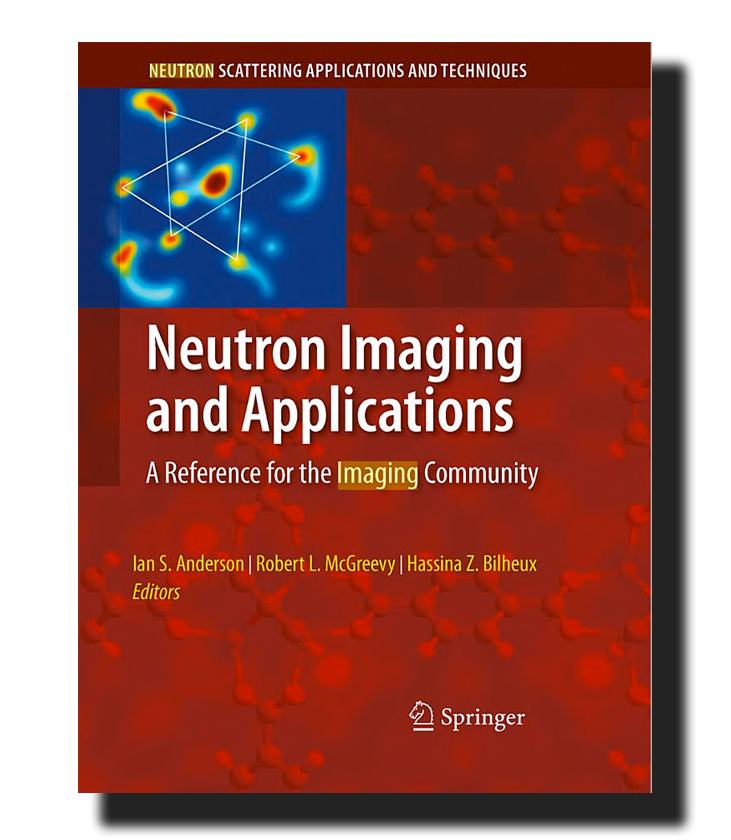
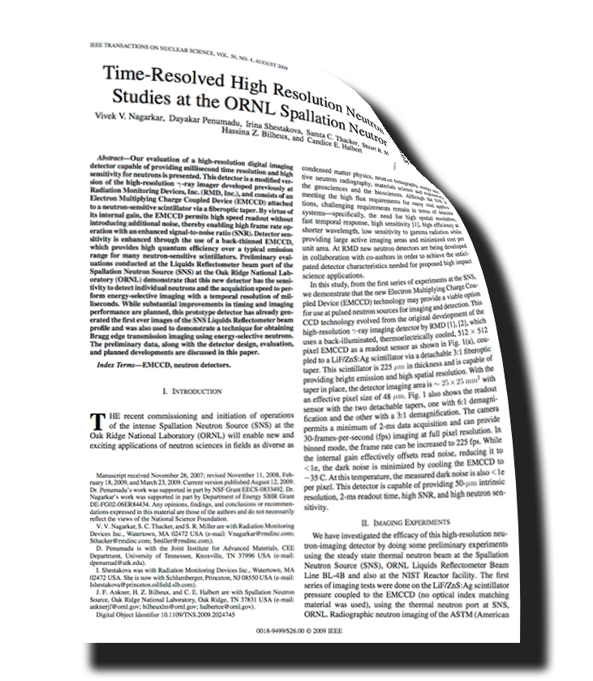
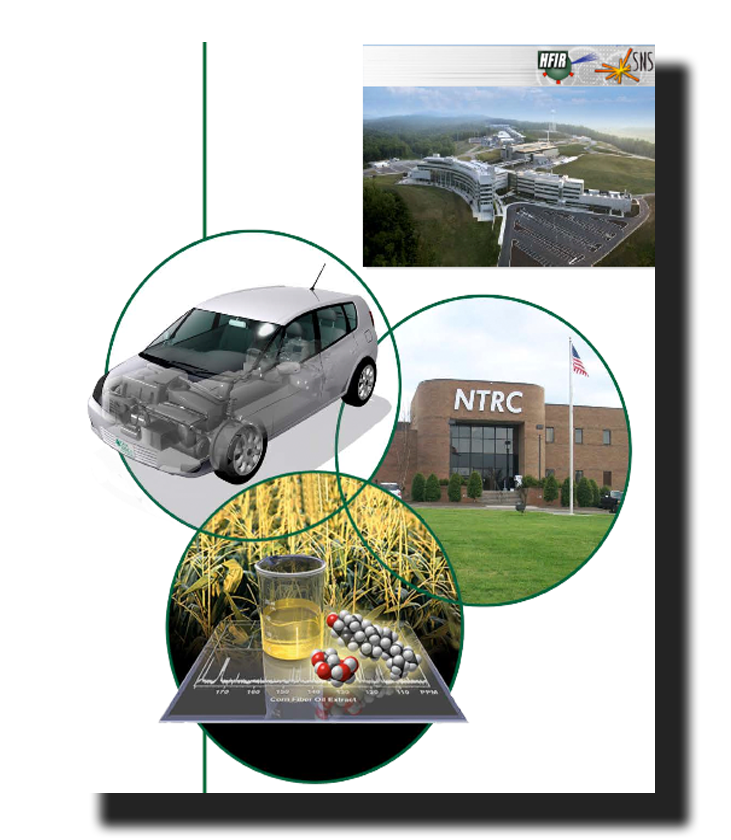
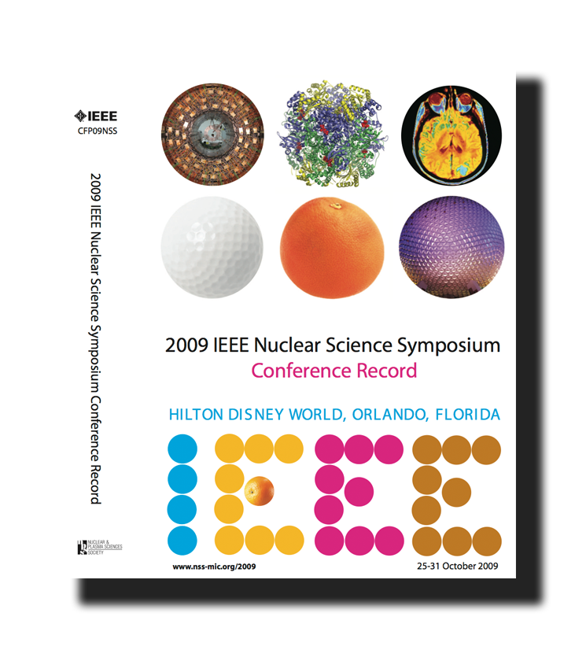
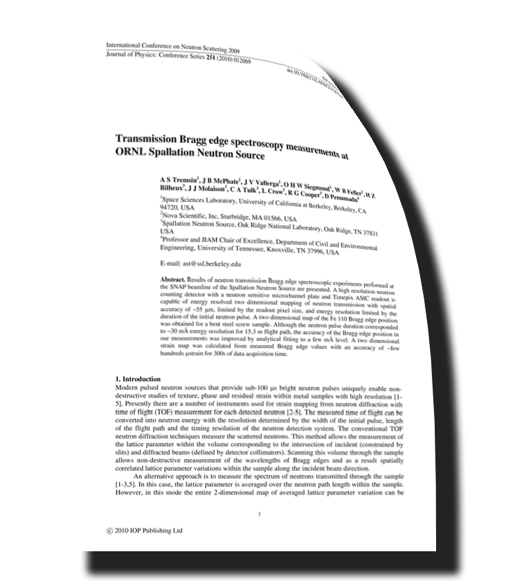
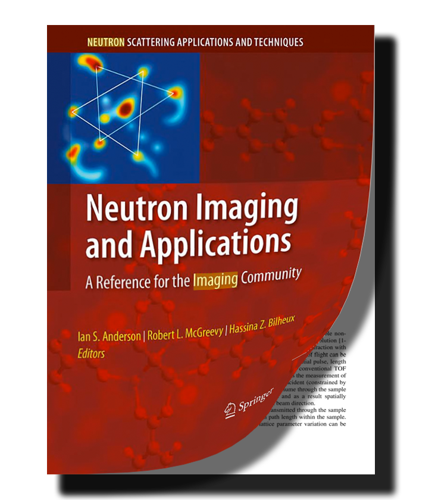
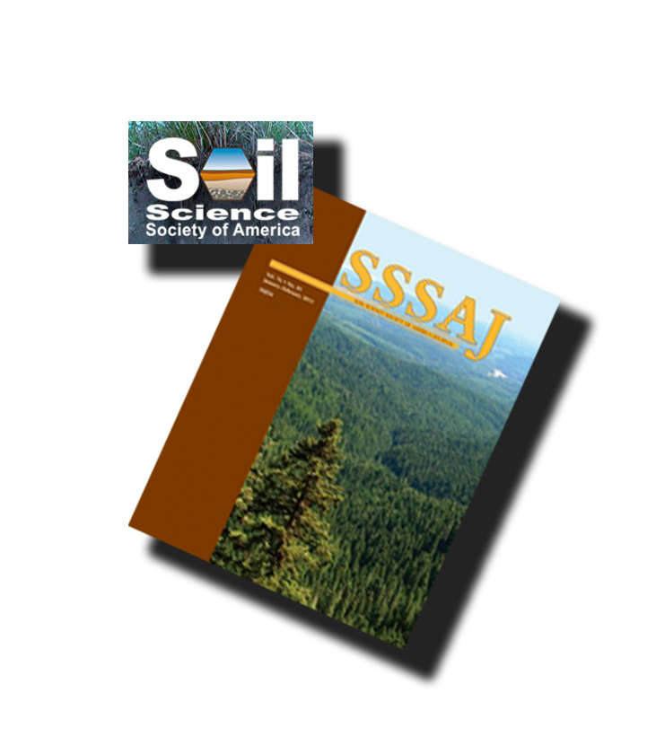
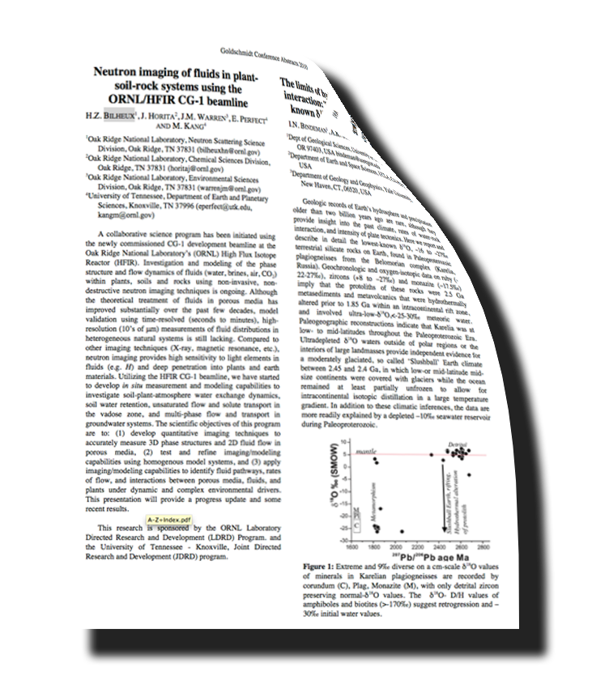
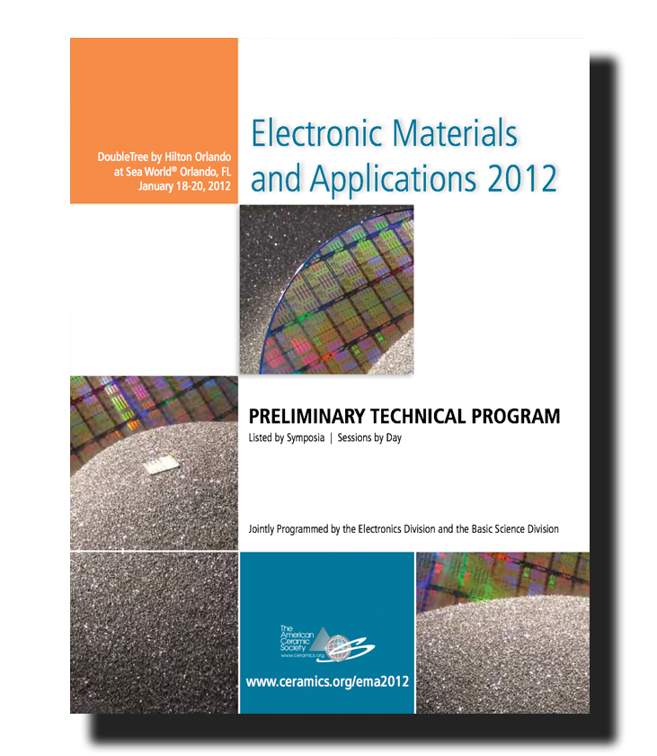

Publications
 |
A New Look with Neutrons. (Archaeology magazine)
Article about the Magic Lampexperiment done at CG1D. Details:
|
|  | Neutron Imaging and Applications. A Reference for the Imaging Community
Neutron Scattering applications and Techniques Details:
|
|  | Time-resolved high resolution neutron imaging studies at the ORNL Spallation Neutron Source. Nuclear Sciences Symposium
Nuclear Science Symposium, Honolulu, Hawaii, USA, October 27 - November 2007. |
|  | Neutron Imaging of Diesel Particulate Filters. SAE 09 FFL-0208
SAE 09FFL-0208, Novembe 2009. |
|  | Investigation of Coded Source Neutron Imaging at the North Carolina State University PULSTAR Reactor. IEEE Nuclear Science Symposium Conference Record
VOLS 1-5 Book Series: IEEE Nuclear Science Symposium Conference Record, 2009. |
|  | Transmission Bragg edge spectroscopy measurements at ORNL Spallation Neutron Source. Journal of Physics
Journal of Physics: Conference Series, Vol. 251, Issue 1 (2010) 012069. |
|  | Probing the Potential of Neutron Imaging for Biomedical and Biological Applications. Neutron Imaging and Applications.
Neutron Imaging and Applications, Springer, 2009, ISBN: 978-0-387-78692-6, p. 253-264. |
| The CG1 instrument development test station at the high flux isotope reactor. Nuclear Instrument and Methods A.
Nucl. Instr. and Meth. A (2010), doi:10.1016/j.nima.2010.06.213. |
|
|  | Average Soil Water Retention Curves Measured by Neutron Radiography. Soil Science Society of America Journal.
Soil Science Society of America Journal, 2011, accepted. |
|  | Neutron imaging of fluids in plant-soil-rock systems using the ORNL/HFIR CG-1 beamline. Conference on Goldschmidt 2010.
Conference on Goldschmidt 2010 - Earth, Energy, and the Environment Location: Knoxville, TN Date: JUN 13-18, 2010. GEOCHIMICA ET COSMOCHIMICA ACTA Volume: 74 Issue: 12 Supplement: 1 Pages: A91-A91 Published: JUN 2010 |
Conferences
| International Society for Neutron Radiography - 7th International Topical Meeting on Neutron Radiography
16-24 June 2012 - Kingston, Ontario, Canada.
|
|
|  | Electronic Materials and Applications 2012
|
| NEUtron WAVElength Dependent Imaging Workshop - NEUWAVE-4
The Oak Ridge National Laboratory's Neutron Sicences Directorate and Energy & Environmental Sciences Directorate hosted
the 4ht Workshop on NEUtron WAVElength Dependent Imaging (NEUWAVE-4).
|
by Oak Ridge National Laboratory, which is managed by the UT-Battelle, LLC.